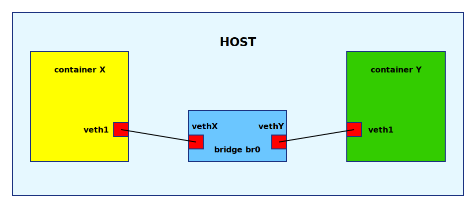

Containers and networking#
Containers without network access are in many cases pretty useless. If the container should not share network resources with the host that is has it's own network namespace we need to connect it somehow because by default new network namespace has only loop device, you can add the network device to a namespace but it can reside only in one of them. Considering dozens of containers on a single host we are not going to have enough physical interfaces.
Virtual ethernet devices#
In Linux you can create virtual ethernet devices, they come in pairs, a so called veth pair, which you can think of as two ethernet cards connected by a cable. using ip tool you can easily assign one of the pair to the container's namespace and the other somewhere else. Ideally to linux bridge or Open vSwitch so we can create virtual networks.
Connecting containers using bridge#

Code
Code in diyC uses system() function to shell out so you can
easily replicate it on the command line.
diyc.c:234-271
iptables#
Once the containers are hooked up using veth pars and a bridge it comes to iptables to do NAT and routing to allow containers to connect to the outer world.